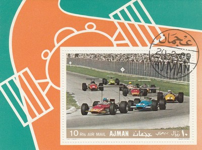

UAE (Emirate of Ajman)
 Issue date: 27th September 1971 Jacky Ickx raced in F1 from 1967 to 1979, driving for Cooper, Ferrari, Brabham, McLaren, Williams, Lotus, Ensign and Ligier; his best results came in 1969 and 1970 when he came 2nd in the drivers championship with Brabham and Ferrari. Clay Regazzoni raced in F1 from 1970 to 1980, driving for Ferrari, BRM, Ensign, Shadow and Williams; his best result was 2nd place in the drivers championship in 1974 with Ferrari. Jack Brabham raced in 1955 to 1970, driving for Cooper before establishing his own team in 1962; Brabham won the drivers title in 1959 and 1960 with Cooper and then again 1966. Jackie Stewart raced in F1 from 1965 to 1973, driving for Owen (BRM), Matra and Tyrrell; Stewart won the drivers title in 1969 (Matra), 1971 and 1973 (Tyrrell). Issue date: 27th September 1971 Jim Clark raced in F1 from 1960 until his death in April 1968; Clark drove exclusively for Lotus winning the drivers title in 1963 and 1965. Bruce McLaren raced in F1 from 1958 to 1970; from 1958 to 1965 McLaren raced for Cooper, his best result coming in 1962 when he came 3rd in the drivers championship. In 1965 McLaren established his own team, again his best result was 3rd place in the drivers championship in 1969 in the M7C which was powered by the Cosworth V8. Gerhard Mitter raced in F1 from 1963 to 1969, but only competed in one or two races in each season; he first drove for Porsche, Lotus, Brabham and BMW. Ignazio Giunti raced in F1 in 1970 for Ferrari, driving the Ferrari 312B, he only competed in four races; Ignazio's best result being 4th place at the Belgian Grand Prix on his debut. Issue date: 1972 A miniature sheet showing various racing cars, which includes some F1 cars.  Issue date: 10th January 1969 The 1969 season was dominated by Jackie Stewart in the Matra (first the MS10 and from Monaco onwards the MS80) as he won 6 of the eleven championship races and the Race of Champions. Jacky Ickx finished second for the season after two wins with Brabham scoring 37 points to Stewart's 63. The start of the 1969 season saw High position wings on some cars but these were banned from Monaco onwards after several failed and caused incidents, they would return later in the season but be limited to lower positions.  Issue date: Unknown A mini sheet of one value featuring Jochen Rindt. Rindt raced in F1 from 1964 to 1970, driving for the Rob Walker Racing Team, Cooper, Brabham and finally Lotus in 1970. In 1970, Rindt won the first four races of the season; at the practice for the Italian grand prix, Rindt was killed when his car hit the barrier at the Parabolica corner. His wins, however, were enough for him to secure the drivers' title - the only driver to be posthumously awarded the drivers' title.  Issue date: Unknown A mini sheet of one value featuring Wolfgang von Trips. Von Trips raced in the F1 from 1956 to 1961, mainly driving for Ferrari, he did drive for Porsche in 1959. The 1961 Italian Grand Prix on 10 September could have been the culmination of von Trips' career, as a third place would have been sufficient to secure the F1 World Drivers Championship that year. At the Italian Grand Prix at Monza, his Ferrari collided with Jim Clark's Lotus; his car became airborne and crashed into a side barrier, fatally throwing von Trips from the car, and killing fifteen spectators. Issue date: 1969 A set of stamps featuring various racing cars and drivers, including: - Wolfgang von Trips - 1956 to 1961, Ferrari - Jim Clark - 1960 to 1968, Lotus - Juan Manuel Fangio - 1950 to 1958, Alfa Romeo, Maserati, Daimler Benz and Ferrari - Alfa Romeo 158 |